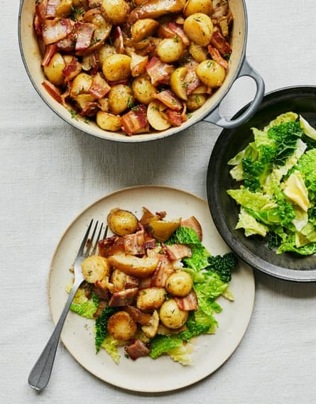

Hot lightning (new potatoes with apples, pears and bacon)

We don’t really cook supper dishes as old-fashioned and northern as this any more, but hetebliksem, as this is known in its native Holland, is delicious on a cold winter evening. And who can resist such a name? Serve just as it is (though wilted savoy cabbage is delicious alongside), or with sausages or pork chops.
Halve the potatoes, or cut them into roughly 3cm chunks. Core and quarter the apples and pears, and cut lengthways into slices about 5mm at their thickest part.
Melt the butter in a heavy-based casserole, and saute the bacon and potatoes until golden all over. Add the fruit and turn it over in the buttery juices. Season and add sugar to taste and the thyme.
Cover the casserole with a lid and cook on a very low heat on top of the stove, or in an oven heated to 180C (160C fan)/350F/gas 4, for 30 or so minutes, or until everything is tender. Shake the pan every so often to prevent everything from sticking, and add a splash of water to the mixture if it is becoming too dry.
Check the seasoning and serve.